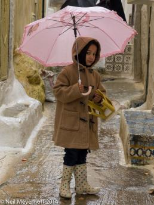
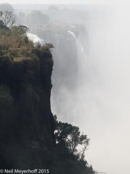
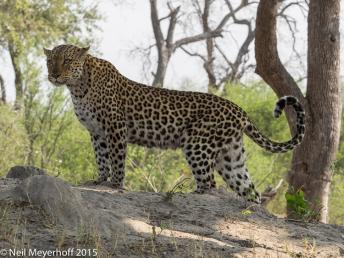
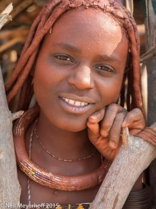

%1
It was raining this day in Moulay Idriss, and this young girl, with her pink pastel umbrella, was carrying a little yellow and white stool somewhere. I was lucky to get her photograph as she turned around due to the noise made by a passing donkey. Most everyone in Morocco we encountered did not want their photograph taken. Olympus OMD EM-1, ISO 400, 40mm, 1/125@f4.5 Click image to enlarge. |
|||
Fisherman using conical net, Inle Lake, Shan State, Myanmar. Nikon D700, 70mm, 1/500@f11.  Click image to enlarge. |
|||
Interior of Vatadage, possible Temple of the Tooth, probably built by King Nissankamalla (1187-1196 CE) at The Quadrangle, in Polonnaruwa, the city that was the centerpiece of the Sinhalese kingdom in early part of the 11th century. These Buddha statues at the cardinal points of the compass, were on the second level of the stupa. The site was declared a UNESCO World Heritage Site in 1982. Olympus OMD EM-1, 12mm, 200 ISO  Click image to enlarge. |
|||
A view of Victoria Falls seen from the Zimbabwe section of the falls. In the low water season the volume of water coming over the falls is less, and visitors can see the falls better as there is less water vapor obscuring the view. Olympus OMD EM-1, 1/320@f9, 100mm, ISO 200 Click image to enlarge. |
|||
We watched this leopard named Splendor track a very small animal, catch it, and then take it into a thick bush to eat. A few minutes later Splendor came out of the bush and stood on this mound looking for more prey. Olympus OMD EM-1, 1/200@f7.1, 95mm, ISO 200 Click image to enlarge. |
|||
A stitched panoramic image of Clifton Beach, which faces the Atlantic, is divided by rocks into four beaches. Residences terraced above the water, such as these shown here, are among the most valuable in Cape Town. Olympus OMD, EM-1, 1/320@f11, 32mm, ISO 200  Click image to enlarge. |
|||
We visited a Himba village near our camp on the Kuene River. The Himbas are a nomadic tribe, moving their camp every several years. However, this valley is so dry it is difficult to believe the small tribe, only a couple of dozen people, are able to sustain themselves here. The money the tourists pay the Himba for their handicrafts is a source of income along with the salaries the Himba earn working in the nearby camps. Would the tourists visit this valley if there were no Himba, and would the Himba remain if there were no tourism? Olympus OMD, EM-1, 1/200@f3.5, 40mm, ISO 200 Click image to enlarge. |
|||
This young girl was part of a group of girls who were present during the second day of a local tsechu (religious festival) outside Jakar in Bumthang district in central Bhutan. This girl is wearing a toego, a short brocaded jacket over her kira, both of which are traditional Bhutanese forms of clothing worn in public. The vertical panoramic photograph was taken with a Hasselblad X-pan camera Click image to enlarge. |
|||
This panoramic image taken with a Hasselblad X-pan camera typifies what I like about panoramic and wide angle photography. This picture is not just about the young girl with the red shoes standing in front of a shoe store, it is also about the reflections of the street in the diagonal window that draws the viewer into the frame. This picture was taken across the street from the main Takashimaya department store in Kyoto, Japan. Click image to enlarge. |
|||
During Holy Week in Queretaro the male residents don these robes and walk in a silent procession from the Convento de la Santa Cruz through the streets while carrying crosses in memory of Jesus. The photograph was taken with a Hasselblad HD-31 with a 28mm lens. Click image to enlarge. |
|||